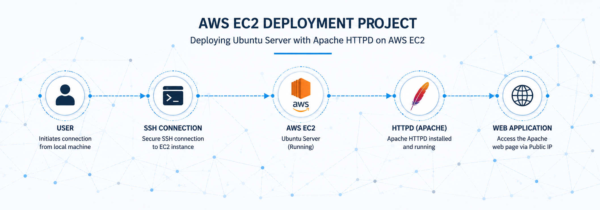

Designed and implemented a wireless home automation system using Bluetooth
communication and embedded systems technology.
The project enables users to control electrical appliances remotely
using an Android device connected through Bluetooth interface.
The system also includes automatic lighting functionality and demonstrates
practical application of embedded systems in automation and control environments.

This project demonstrates Linux server automation using Bash scripting.
The script automatically installs and configures Apache (httpd)
on a Linux machine, reducing manual configuration steps.
It reflects practical experience in Linux administration,
service management, package installation, and automation of routine tasks.

This project demonstrates deployment and configuration of an AWS EC2
Amazon Linux server instance.
The deployment includes SSH connectivity, Linux server configuration,
Apache web server installation, and website hosting on cloud infrastructure.
It also demonstrates foundational cloud computing and infrastructure deployment skills.
Higher National Diploma (HND)
The Polytechnic Ibadan
Electrical & Electronics Engineering
National Diploma (ND)
The Polytechnic Ibadan
Electrical & Electronics Engineering